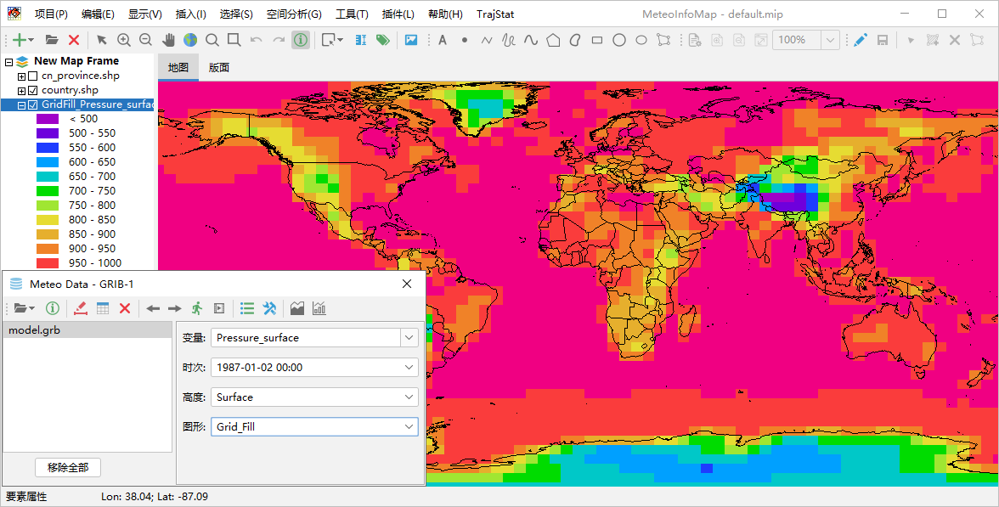

生成站点数据GIS图层¶
站点数据的空间分布是离散的，可以绘制成以下几种类型的GIS图层：
站点图（Station Point），生成站点分布点图层，选中变量的数据添加在图层的属性表中；
站点信息图（Station Info），生成站点分布点图层，站点数据中所有变量的数据均添加到图层的属性表中；
天气符号图（Weather Symbol），生成天气符号分布点图层，天气现象用天气符号字体绘制；
站点填图（Station Model），生成站点填图点图层，站点观测的多个数据信息以相应符号绘制；
风场矢量（Vector），生成风场矢量点图层，根据站点风U/V变量或者风向、风速数据绘制风箭头；
风向杆（Barb），生成风场风向杆点图层，根据站点风U/V分量或者风速、风向数据绘制风向杆；
等值线（Contour），站点数据先插值生成格点数据，然后再由格点数据生成矢量线图层，需要进行等值线追踪；
等值线填色（Shaded），站点数据先插值生成格点数据，然后再由格点数据生成矢量多边形图层，需要进行等值线追踪、拓扑填色；
风场流线（Streamline），站点数据先插值生成格点数据，然后再由格点数据生成风场流线图层，根据风场U/V分量进行风场流线追踪，生成流线图层，以线条和流线方向箭头形式显示。
站点图¶
这里以“MeteoInfo -> sample -> MICAPS”目录中的MICAPS第一类数据文件10101414.000为例，在气象数据对话框中打开该数据 文件软件会自动读取数据信息，并将数据中所有变量放入“变量”下拉框中，该数据为地面全要素气象观测数据，包含气象站地面观测的多个 变量，该数据文件仅有一个时次。例如选择“变量”为能见度（Visibility），“图形”为Station_Point，点击“绘制数据图形”按钮生 成站点分布点图层，图层的属性表中由两个字段，分别是站号和能见度数据。
站点信息图¶
气象数据对话框中“图形”设置为Station_Info也同样生成站点分布点图层，和站点图不同的是站点数据中所有变量数值都放入了图层的属性表中。
天气符号图¶
站点观测到的天气现象通过天气现象编码以1-99的整数放入数据文件中，在气象数据对话框中“变量”设为现在天气（WeatherNow），“图形”设置 为Weather_Symbol，点击“绘制数据图形”按钮生成天气符号点图层。
生成天气符号点图层后，点击气象数据对话框工具栏的“设置”按钮，可以选择绘制哪些天气现象符号。
站点填图¶
在气象数据对话框中设置“图形”为Station_Model，点击“绘制数据图形”按钮生成站点填图点图层，图层属性表中包含风速、风向、天气现象、温度、 露点、气压、云覆盖字段，这些数据以站点填图的形式绘制。
站点填图图层缺省设置了图形免压盖，只绘制不互相压盖的空间要素。在图层属性对话框中勾选掉免压盖（Avoid Collision）选项，则所有空间要素 都被绘制出来，站点密集的地方会有图形压盖现象。
风场矢量和风向杆图¶
地面全要素观测数据中有风向（WindDirection）、风速（WindSpeed）变量，在气象数据对话框中设置“图形”为Vector，点击“绘制数据图形”按 钮生成风场矢量点图层，软件会自动识别风向、风速变量名，也可以手动设置。选中“着色”选项可以根据“变量”中的变量对风箭头着色。
风向杆图类似，“图形”设置为Barb即可。
等值线和等值线填色¶
站点数据进行等值线分析需要先将站点数据通过插值（Interpolation）生成格点数据，然后在利用格点数据追踪等值线和拓扑填色算法生成等值线 线图层或者等值线填色多边形图层。站点插值到格点的插值算法有很多，MeteoInfo里提供了气象上一些常用的插值算法：反距离权法（IDW）、 Cressman和Barns客观分析算法以及Kriging方法。例如制作站点中国区域6小时累积降水等值线填色图，在气象数据对话框中设置“变量”为 Precipitation6h，“图形”为Shaded，点击“绘制数据图形”按钮软件会根据数据范围自动给出缺省格点和插值方法设置，并生成等值线填色图。 软件给出的缺省值通常效果并不好，需要用户自行进行插值设置。
点击气象数据对话框工具栏中的“设置”按钮，打开插值设置对话框，对话框上部是格点范围和分辨率的设置，下部是插值方法和参数的设置。格点数据 范围如果是等经纬度投影可以用最小经度（minX）、最大经度（maxX）、最小纬度（minY）和最大纬度（maxY）来控制。格点数据分辨率可以用经 度（X）方向和纬度（Y）方向格点的大小（XSize和YSize）来设置，或者用X方向和Y方向格点数（XNum和YNum）来设置。插值方法通过Method下 拉框来选择，IDW方法又分为两类：IDW_Radius和IDW_Neighbours。IDW_Radius要设置插值半径（Radius），只选择要插值的格点为中心半径 范围内的站点进行反距离权插值计算，如果半径范围内没有站点或者站点数目少于最小站点数（MinNum）则该格点的值设为缺测值。IDW_Neighbours 方法在插值计算某个格点值时会遍历所有站点数据，然后根据站点到该格点的距离进行反距离权插值计算。
通过上图中格点和IDW插值参数设置，再通过气象数据对话框工具栏中“图里设置”工具设置合适的图例，重新生成等值线填色图层如下。
Cressman客观分析是气象上常用的插值方法，它通过使用多次迭代强制将数据收敛为观测到的内插值来实现。该方法通常需要设置多个插值半径， 每次迭代需要一个插值半径，插值半径依次减小。下图是Cressman插值方法生成站点等值线填色的例子。
风场流线¶
站点数据绘制风场流线图需要站点数据中有风场U/V或风向、风速变量。示例数据中有风向（WindDirection）和风速（WindSpeed）变量，在软 件内部会先计算出风场U/V分量，然后对U/V变量进行插值生成格点的U/V数据，再做流线分析生成风场流线图层。